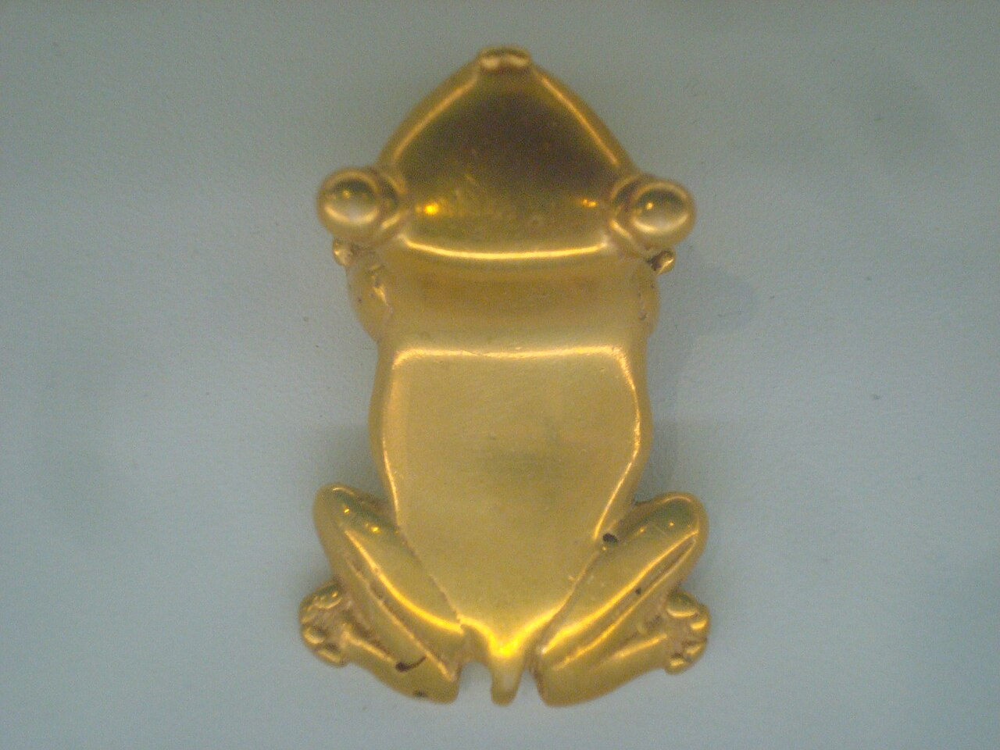
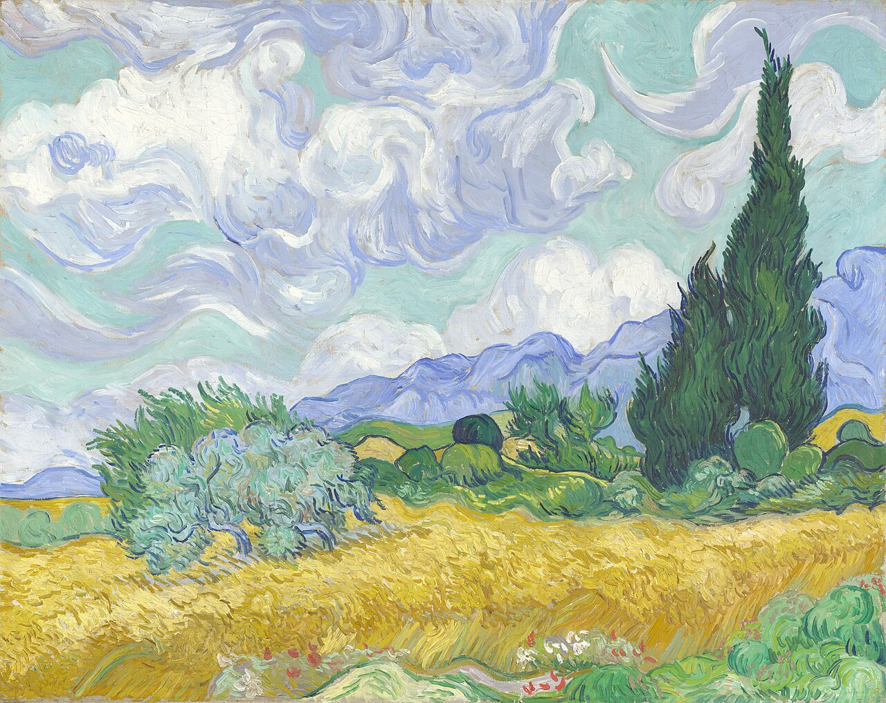
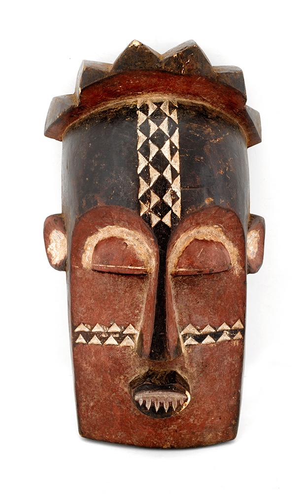

《冰山》The Icebergs
博物馆头号招牌。傍晚阳光把冰山照得通透，海面泛着蓝绿光泽，前景一截断桅暗示危险。首展于南北战争募捐展，被誉为「美国迄今最辉煌的艺术品」。被英国铁路大亨买走后失踪一百多年，1970 年代重现并以破纪录价成交，匿名捐给 DMA。

《雪中狐狸》Fox in the Snow
库尔贝写实主义代表作之一。一只狐狸在雪地里捕食，毛皮质感和雪地光影处理得极其扎实。它是 DMA 欧洲绘画板块里少有的「教科书级」名作，也是法国写实主义在馆内的标杆。
非洲约鲁巴木雕 · 现场感受
《持碗跪姿女像》(Olumeye)
约鲁巴宫廷御用雕刻大师 Olowe of Ise 的彩绘木雕。表现约鲁巴待客礼仪——「带来荣耀的女人」捧着一只几何纹饰的木碗，碗底由一圈女性人像高举双手托起，其中一颗有胡须的头颅竟可活动。Olowe 的作品被欧美澳多家博物馆收藏。
8 世纪唐三彩 · 现场感受
《天王像》Lokapala（护法天王）
一件 8 世纪初的中国佛教护法塑像，唐三彩工艺。融合道教与佛教图像——一名身披橘绿装饰铠甲的猛士，戴着奇幻的鸟形头盔，威风凛凛地踩在扭动的恶魔身上。是中国护法神俑里的精品。

前哥伦布时期金器与玉器
黄金工艺品、玉器、陶器，工艺精细、年代久远。这块收藏在全美博物馆里都数得上号，是 DMA 真正的硬实力，常和古代地中海艺术并置展出。

Wendy and Emery Reves Collection
一整片专属展区，复刻 Reves 夫妇在法国南部别墅的房间，印象派与后印象派名作就挂在「家」的环境里。还配欧洲装饰艺术与家具，跟常规白墙展厅完全不同，是个独立小天地。
1953 三联可移动壁画 · 现场感受
《El Hombre（人）》
专为 DMA 委托创作的「可移动壁画」，由三大幅画板组成。一个巨大的红色抽象人形向上伸展，探入奇幻旋动的天空。塔马约擅长把立体主义等欧洲画风与墨西哥民俗主题揉在一起，整件作品透着一种魔幻的希望感。
《Montana Memories: White Pine》1989 · 现场感受
《Montana Memories: White Pine》
开创性的多媒材艺术家、Salish 与 Kootenai 部族成员的代表作。抽象彩色矩形配上滴落的黑色线描——独木舟、老式系扣靴等 19 世纪物件，在赞颂当代原住民文化的同时审视美国充满问题的过去与现在。
Mondrian · Rothko · Lichtenstein · Pollock
现代与当代名作群
1963 年 DMA 与达拉斯当代艺术博物馆合并后，一举拥有高更、雷东、马蒂斯、蒙德里安、Gerald Murphy、培根等重磅作品。如今现当代展区还有罗斯科的色域绘画、利希滕斯坦的波普名作，是一条完整的 20 世纪艺术线索。

非洲艺术整体收藏
除了 Olowe of Ise 的镇馆雕塑，DMA 整片非洲艺术展厅都很厚实——面具、人像、金属工艺横跨多个族群与世纪，是美国收藏非洲艺术的重要机构之一。
怎么观看合适
- 时长常设馆藏认真看 3–4 小时；想细品 Reves 展区单独留半天。
- 路线先冲 Reves 珍藏 + 《冰山》（最堵），再走非洲与古代美洲，最后扫现当代。
- 省钱常设展全程免费，只有特展收费——只看免费部分性价比极高。
- 顺道馆在 Dallas Arts District，旁边 Nasher 雕塑中心、Crow 亚洲艺术馆步行可达，可连看一天。
- 交通DART 轻轨 St. Paul 站、M-Line 复古电车都能直达。
- 闭馆周一闭馆。出发前上官网 dma.org 确认当天时间和当期特展。